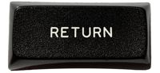
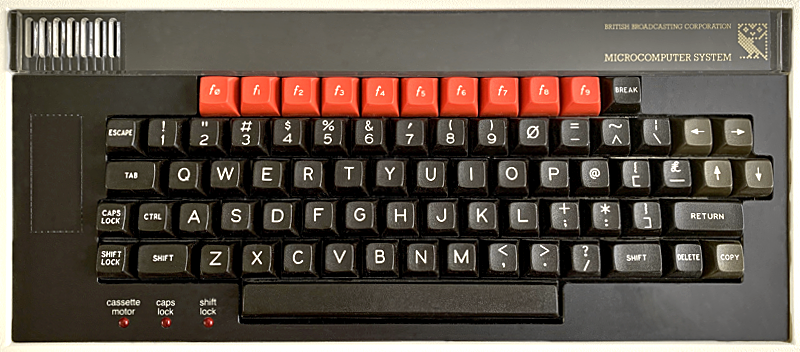
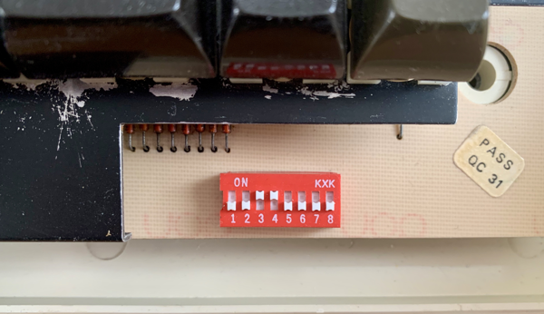

OSBYTE 15, 21, 120-122, 131; Keyboard processing, translation table, scanning code; KEYV entry point; Speech table; *HELP - 603 bytes (3.6%)
- §1. tidyUpAfterKeyboardProcessing
- §2. keyboardIndicators
- §3. KEYV - Default main keyboard handling routine
- §4. keyVClear
- §5. keyboardTimerInterrupt
- §6. Test SHIFT and CTRL
- §7. checkForKeyAutorepeat
- §8. testCapsLock
- §9. Get ASCII code
- §10. testCapsLockEngaged
- §11. Check for key pressed and store
- §12. resetAutorepeatCounters
- §13. Read a single key's state from the keyboard
- §14. The seven 'key data' tables
- §15. OSBYTE 120 - Write key pressed data
- §16. keyDataTable2
- §17. jimPagedEntryJumper
- §18. osbyteOrOSWORDJumper
- §19. keyDataTable3
- §20. keyboardInterruptRoutine
- §21. keyDataTable4
- §22. Tables for reading or writing speech
- §23. keyDataTable5
- §24. OSBYTE 131 - Read OSHWM (OS High Water Mark)
- §25. keyDataTable6
- §26. flushCurrentInputBuffer
- §27. keyDataTable7
- §28. OSBYTE 15 - Flush selected buffer class
- §29. OSBYTE 21 - Flush specific buffer
- §30. *HELP
- §31. Keyboard scan ignoring SHIFT and CTRL, without KEYV vector
- §32. OSBYTE 122 - Keyboard scan ignoring SHIFT and CTRL
- §33. OSBYTE 121 - Keyboard scan from value in X
- §34. Scan Keyboard
§1. tidyUpAfterKeyboardProcessing.
.tidyUpAfterKeyboardProcessing = $eeda LDX #$FF assume enable keyboard interrupt processing LDA .lastKeyPressedInternal } ORA .firstKeyPressedInternal } check for any key pressed BNE + if (anything pressed) then branch (skip forward, don't ignore keyboard interrupts) LDA #%10000001 enable keyboard interrupt (by writing bit 7 and STA .systemVIAInterruptEnableRegister bit 0 of system VIA interrupt enable register) INX set X=0 (ignore keyboard interrupts) + STX .enableKeyboardInterruptProcessingFlag set keyboard interrupt processing flag (0 means ignore keyboard interrupts, 255 means don't ignore keyboard interrupts) fall through...
write to the keyboard LEDs (SHIFT LOCK and CAPS LOCK) On Entry: .keyboardStatusFlags contains the SHIFT / CAPS LOCK state to write to the LEDs On Exit: A contains the value of the flags register on entry Preserves N and V flags
.keyboardIndicators = $eeeb PHP save flags LDA .keyboardStatusFlags read keyboard status Bit 4 = 0 means CAPS LOCK engaged (c) bit 5 = 0 means SHIFT LOCK engaged (s) A = %xxscxxxx LSR A = %0xxscxxx AND #%00011000 A = %000sc000 ORA #6 A = %000sc110 STA .systemVIARegisterB write the bottom nybble to turn on or off CAPS LOCK light LSR A = %0000sc11 ORA #7 A = %0000s111 STA .systemVIARegisterB write the bottom nybble to turn on or off SHIFT LOCK light JSR .enableKeyboardScanning enable keyboard scanning PLA get back flags RTS
§3. KEYV - Default main keyboard handling routine.
On Entry: Flags C V Resolved to: 0 0 - Test SHIFT and CTRL keys (exit with N=1 if CTRL pressed; V=1 if SHIFT pressed) See .keyTestSHIFTAndCTRLOrTimerInterrupt 1 0 - Scan keyboard (as OSBYTE 121) See .scanKeyboard 0 1 - Key pressed interrupt entry See .keyPressedInterrupt 1 1 - Timer interrupt entry See .keyboardTimerInterrupt
.keyEntryPoint = $ef02 BVC .keyVClear if (V is clear) then branch LDA #1 disable keyboard interrupts STA .systemVIAInterruptEnableRegister by writing to VIA interrupt vector BCS .keyboardTimerInterrupt if (timer interrupt) then branch JMP .keyPressedInterrupt jump
.keyVClear = $ef0e BCC .keyTestSHIFTAndCTRLOrTimerInterrupt if (carry clear) then branch (test SHIFT and CTRL) JMP .scanKeyboard jump to scan keyboard
.keyboardTimerInterrupt = $ef13 INC .enableKeyboardInterruptProcessingFlag increment keyboard flag to zero to stop further key processing fall through...
On Entry: Carry CLEAR if entered here for testing the SHIFT and CTRL keys Carry SET if entered via the keyboard timer interrupt On Exit: N=1 if CTRL pressed V=1 if SHIFT pressed
.keyTestSHIFTAndCTRLOrTimerInterrupt = $ef16 LDA .keyboardStatusFlags read keyboard status Bit 3 = 1 means SHIFT pressed Bit 4 = 0 means CAPS LOCK engaged bit 5 = 0 means SHIFT LOCK engaged Bit 6 = 1 means CTRL pressed Bit 7 = 1 means SHIFT enabled AND #%10110111 zero bits 3 and 6 (SHIFT and CTRL pressed) LDX #0 zero X to test for SHIFT key pressed JSR .interrogateKeyboard interrogate keyboard. Returns with X=$80 if SHIFT is pressed STX .tempStoreFA save X (SHIFT key status) CLV clear V BPL .testCTRL if (no key pressed) then branch (check for CTRL key) BIT .allBitsSet set N and V flags ORA #%00001000 set bit 3 to indicate SHIFT was pressed .testCTRL = $ef2a INX (X=$01 or X=$81 but top bit is ignored by .interrogateKeyboard) JSR .interrogateKeyboard check the CTRL key (key X) BCC .keyboardIndicators if (entered routine just for testing SHIFT and CTRL status) then branch (to turn on keyboard lights as required and exit) at this point we are here because of a timer interrupt BPL + if (key not pressed) then branch ORA #%01000000 or set CTRL pressed bit in keyboard status byte in A + STA .keyboardStatusFlags save the updated status byte LDX .lastKeyPressedInternal BEQ .noLastKeyPressed if (no key pressed) then branch JSR .interrogateKeyboard check to see if last key is still pressed BMI .checkForKeyAutorepeat if (key pressed) then branch (enter repeat routine) CPX .lastKeyPressedInternal compare X (zero) with last key pressed .storeLastKeyPressed = $ef42 STX .lastKeyPressedInternal store X in last key pressed BNE .noLastKeyPressed if (no key recently pressed) then branch LDX #0 } STX .lastKeyPressedInternal } store zero as the last key pressed .resetAutorepeatAndContinue = $ef4a JSR .resetAutorepeatCounters and reset repeat system .noLastKeyPressed = $ef4d JMP .keyboardRolloverChecks
This looks the see if the current key pressed is the same as the previous key pressed If so we handle auto-repeat.
.checkForKeyAutorepeat = $ef50 CPX .lastKeyPressedInternal BNE .storeLastKeyPressed if (X is not the same as the last key pressed) then branch back new key pressed is same as last key pressed, so handle auto-repeat LDA .autorepeatCountdownTimer get auto repeat countdown timer BEQ .afterModifiers if (auto repeat countdown timer is zero) then branch DEC .autorepeatCountdownTimer decrement timer BNE .afterModifiers if (not zero) then branch (still waiting for a repeat delay to finish) LDA .keyboardFirstAutorepeatCount get initial autorepeat delay (or repeat interval) STA .autorepeatCountdownTimer store it in countdown timer LDA .keyboardAutoRepeatRate get auto repeat interval STA .keyboardFirstAutorepeatCount store it as next value for countdown timer LDA .keyboardStatusFlags get keyboard status LDX .lastKeyPressedInternal get last key pressed CPX #$D0 check for SHIFT LOCK key BNE .testCapsLock if (not SHIFT LOCK) then branch (to test CAPS LOCK) deal with SHIFT LOCK key pressed. Update keyboard status flags. ORA #%10010000 sets keyboard status flags (enable SHIFT, disengage CAPS LOCK) Bit 3 = 1 means SHIFT pressed Bit 4 = 0 means CAPS LOCK engaged bit 5 = 0 means SHIFT LOCK engaged Bit 6 = 1 means CTRL pressed Bit 7 = 1 means SHIFT enabled EOR #%10100000 flip SHIFT enabled, and flip SHIFT LOCK engaged .resetKeyboardStatusAndTimer = $ef74 STA .keyboardStatusFlags set keyboard status LDA #0 and set timer STA .autorepeatCountdownTimer to 0 .afterModifiers = $ef7b JMP .keyboardRolloverChecks
.testCapsLock = $ef7e CPX #$C0 check for CAPS LOCK BNE .getASCIICode if (not CAPS LOCK) then branch (decode key to ASCII etc) deal with CAPS LOCK key pressed. Update keyboard status flags. ORA #$A0 enable shift flag, and disengage SHIFT LOCK BIT .tempStoreFA check for SHIFT pressed BPL + if (SHIFT not pressed) then branch ORA #$10 set CAPS LOCK disengaged EOR #$80 flip SHIFT enabled + EOR #$90 reverse both SHIFT enabled and CAPS LOCK JMP .resetKeyboardStatusAndTimer reset keyboard status and set timer
Handles the conversion of the internal key number (here with the top bit set) into the final ASCII code. It takes into account the current state of CTRL key, SHIFT key, the SHIFT LOCK and CAPS LOCK engaged states. See .scanKeyboard for table of internal key numbers. On Entry: X = key pressed internal number WITH THE TOP BIT SET X is at least $90, since the internal key number is at least 16 ($10).
.getASCIICode = $ef91 LDA .keyDataTable1 - $90,X get ASCII code from look up tables BNE + if (not zero, i.e. TAB not pressed) then branch (skip TAB) deal with TAB key LDA .asciiCodeGeneratedByTABKey get TAB character (9 by default) + LDX .keyboardStatusFlags get keyboard status STX .tempStoreFA store keyboard status in temporary storage ROL .tempStoreFA rotate to get CTRL pressed into bit 7 BPL + if (CTRL not pressed) then branch (past CTRL processing) deal with CTRL key pressed LDX .firstKeyPressedInternal get number of previously pressed key .localResetAutorepeatAndContinue = $efa4 BNE .resetAutorepeatAndContinue if (not zero) then branch (reset autorepeat counters) JSR .implementCTRLCodes perform code changes for CTRL + ROL .tempStoreFA move SHIFT LOCK into bit 7 BMI .testCapsLockEngaged if (SHIFT LOCK not engaged) then branch (skip SHIFT LOCK processing) deal with SHIFT LOCK key engaged JSR .implementSHIFT make code changes for SHIFT ROL .tempStoreFA move CAPS LOCK into bit 7 JMP .testShiftEnabled
.testCapsLockEngaged = $efb5 ROL .tempStoreFA move CAPS LOCK into bit 7 BMI .testShift if (CAPS LOCK not engaged) then branch deal with CAPS LOCK engaged JSR .isLetter make changes for CAPS LOCK on, return with C clear for alphabetic codes BCS .testShift if (not a letter) then branch JSR .implementSHIFT transform the letter via SHIFT .testShiftEnabled = $efc1 LDX .keyboardStatusFlags check SHIFT enabled bit BPL .testESCAPEcode if (SHIFT disabled) then branch .testShift = $efc6 ROL .tempStoreFA move SHIFT into bit 7 BPL .testESCAPEcode if (no SHIFT key) then branch deal with SHIFT key pressed LDX .firstKeyPressedInternal get previous key press BNE .localResetAutorepeatAndContinue if (not 0) then branch (reset repeat system etc) JSR .implementSHIFT make code changes for SHIFT .testESCAPEcode = $efd1 CMP .asciiCodeThatGeneratesESCAPEAction check against ESCAPE action BNE + if (A is not ESCAPE action) then branch deal with ESCAPE key LDX .escapeAction get ESCAPE key action type BNE + if (ESCAPE returns ASCII code) then branch STX .autorepeatCountdownTimer store zero in auto-repeat countdown timer + TAY JSR .enableKeyboardScanningFlippingInterrupts enable keyboard scanning LDA .keyboardDisableFlag read Keyboard disable flag (used by Econet) BNE .keyboardRolloverChecks if (keyboard disabled) then branch finally put result into keyboard input buffer JSR .insertByteIntoKeyboardBuffer put character in input buffer Check for two key rollover .keyboardRolloverChecks = $efe9 LDX .firstKeyPressedInternal get first keypress BEQ + if (none) then branch JSR .interrogateKeyboard examine to see if key still pressed STX .firstKeyPressedInternal store result BMI + if (key pressed) then branch LDX #0 STX .firstKeyPressedInternal reset .firstKeyPressedInternal to zero + LDX .firstKeyPressedInternal get .firstKeyPressedInternal BNE .continueKeyProcessing if (not zero) then branch LDY #.lastKeyPressedInternal get address of last keypress into Y JSR .clearCarryKeyboardScan scan keyboard from $10 (osbyte 122) BMI .localTidyUpAfterKeyboardProcessing if (exit is negative) then branch LDA .lastKeyPressedInternal make the last key the STA .firstKeyPressedInternal first key pressed i.e. rollover .storeKeyAndReset = $f007 STX .lastKeyPressedInternal save X into .lastKeyPressedInternal JSR .resetAutorepeatCounters set keyboard repeat delay .localTidyUpAfterKeyboardProcessing = $f00c JMP .tidyUpAfterKeyboardProcessing finish up
§11. Check for key pressed and store.
On Entry: X = key
.keyPressedInterrupt = $f00f JSR .interrogateKeyboard check if key pressed .continueKeyProcessing = $f012 LDA .lastKeyPressedInternal get previous key press BNE .localTidyUpAfterKeyboardProcessing if (none) then branch (back to housekeeping routine) LDY #.firstKeyPressedInternal JSR .clearCarryKeyboardScan and scan keyboard BMI .localTidyUpAfterKeyboardProcessing if (negative on exit) then branch (back to housekeeping) BPL .storeKeyAndReset ALWAYS branch (back to store X; reset keyboard delay etc)
.resetAutorepeatCounters = $f01f LDX #1 set timer to 1 STX .autorepeatCountdownTimer LDX .keyboardAutoRepeatDelay get next timer value STX .keyboardFirstAutorepeatCount and store it RTS
§13. Read a single key's state from the keyboard.

On Entry: X = key to test On Exit: A is preserved Carry is preserved X = $80 if key pressed (N set) $00 otherwise (N clear)
.interrogateKeyboard = $f02a LDY #3 stop keyboard scanning STY .systemVIARegisterB by writing to system VIA LDY #%01111111 input on bit 7, output on bits 0 to 6 STY .systemVIADataDirectionRegisterA STX .systemVIARegisterANoHandshake write X to Port A system VIA LDX .systemVIARegisterANoHandshake read back ($80 + internal key number) if key pressed (or zero otherwise) RTS
§14. The seven 'key data' tables.
What follows is 7 tables of 10 bytes each, spaced 16 bytes apart, giving the 'ASCII' character codes for each internal key number on the keyboard row. In the six bytes between each table, small snippets of unrelated code are inserted. See .scanKeyboard for table of internal key numbers.
.keyDataTable1 = $f03b q , 3 , 4 , 5 , f4, 8 , f7, - , ^ ,LEFT !byte $71,$33,$34,$35,$84,$38,$87,$2D,$5E,$8C
§15. OSBYTE 120 - Write key pressed data.
.osbyte120EntryPoint = $f045 STY .lastKeyPressedInternal store Y as latest key pressed STX .firstKeyPressedInternal store X as previous key pressed RTS !byte 0 [unused]
.keyDataTable2 = $f04b f0, w , e , t , 7 , i , 9 , 0 , _ ,DOWN !byte $80,$77,$65,$74,$37,$69,$39,$30,$5F,$8E
.jimPagedEntryJumper = $f055 JMP (.jimPagedEntryPoint) Jim paged entry vector
.osbyteOrOSWORDJumper = $f058 JMP (.tempStoreFA)
.keyDataTable3 = $f05b 1 , 2 , d , r , 6 , u , o , p , [ ,UP !byte $31,$32,$64,$72,$36,$75,$6F,$70,$5B,$8F
§20. keyboardInterruptRoutine.
.keyboardInterruptRoutine = $f065 BIT .allBitsSet set N and V flags .keyJumper = $f068 JMP (.vectorKEYV) i.e. KEYV
.keyDataTable4 = $f06b CAPS LOCK, a , x , f , y , j , k , @ , : ,RETURN !byte $01,$61,$78,$66,$79,$6A,$6B,$40,$3A,$0D
§22. Tables for reading or writing speech.
.speechDirectionTable = $f075 !byte $00,$FF System VIA DDRA (8 bit Read / 8 bit Write) .speechEnableTable = $f077 !byte $01,$02 System VIA Register B (Enable Read Speech / Enable Write Speech) .speechDisableTable = $f079 !byte $09,$0A System VIA Register B (Disable Read Speech / Disable Write Speech)
.keyDataTable5 = $f07b SHIFT LOCK, s , c , g , h , n , l , ; , ] ,DELETE !byte $02,$73,$63,$67,$68,$6E,$6C,$3B,$5D,$7F
§24. OSBYTE 131 - Read OSHWM (OS High Water Mark).
.osbyte131EntryPoint = $f085 LDY .currentOSHWM read current OSHWM LDX #0 RTS
.keyDataTable6 = $f08b TAB, Z ,SPACE, V , b , m , , , . , / ,COPY !byte $00,$7A,$20 ,$76,$62,$6D,$2C,$2E,$2F,$8B NOTE: TAB returns 0, and is handled as a special case in the code
.flushCurrentInputBuffer = $f095 LDX .currentInputBuffer get current input buffer .flushBufferXJumper = $f098 JMP .flushBufferX flush it
.keyDataTable7 = $f09b ESC, f1, f2, f3, f5, f6, f8, f9, \ ,RIGHT !byte $1B,$81,$82,$83,$85,$86,$88,$89,$5C,$8D .eventJumper = $f0a5 JMP (.vectorEVNTV) jump to eventV handling routine
§28. OSBYTE 15 - Flush selected buffer class.
On Entry: X = 0 flush all buffers X != 0 flush input buffer
.osbyte15EntryPoint = $f0a8 BNE .flushCurrentInputBuffer if (X is not zero) then branch (flush input buffer only) .flushAllBuffers = $f0aa LDX #.bufferNumberHighest load highest buffer number (8) - CLI allow interrupts briefly SEI disable interrupts JSR .osbyte21EntryPoint flush buffer DEX decrement X to point at next buffer BPL - if (X >= 0) then branch (flush next buffer) fall through... (at this point X=255)
§29. OSBYTE 21 - Flush specific buffer.
On Entry: X=buffer number
.osbyte21EntryPoint = $f0b4 CPX #.bufferNumberHighest + 1 test against largest buffer number BCC .flushBufferXJumper if (X < 9) then branch (flush buffer X) RTS
.starHelp = $f0b9 LDX #.romServiceCallHelp } Issue *HELP service request to JSR .osbyte143EntryPoint } paged ROMs. Returns with Y = 0 } if message below is to be } suppressed JSR .printFollowingMessage print following message routine !text .charRETURN Carriage return !text "OS 1.20" !text .charRETURN Carriage return !byte $00 terminator RTS
§31. Keyboard scan ignoring SHIFT and CTRL, without KEYV vector.
Starts scanning from 16 decimal (row 1 of the internal key table). On Entry: Y = $EC or $ED, the address of the keyboard table to set: .lastKeyPressedInternal = $EC .firstKeyPressedInternal = $ED
.clearCarryKeyboardScan = $f0cc CLC clear carry pass through...
§32. OSBYTE 122 - Keyboard scan ignoring SHIFT and CTRL.
Ignores the first row of the keyboard (SHIFT, CTRL, and the hardware DIP switches) See .scanKeyboard.
.osbyte122EntryPoint = $f0cd LDX #16 set X to 16 (ignores the first keyboard row containing SHIFT, CTRL, and the hardware keyboard switches) pass through...
§33. OSBYTE 121 - Keyboard scan from value in X.
.osbyte121EntryPoint = $f0cf BCS .keyJumper if entry is via OSBYTE 121 or OSBYTE 122 then carry is set. We branch to jump through the KEYV vector to .keyEntryPoint. (Assuming the default vector routine is in place. If V is set then that code will jump to .scanKeyboard below) if entry is via .clearCarryKeyboardScan above then carry is clear and we fall through... fall through...

The BBC Micro has 74 keys, and 8 DIP switches. All keys can be read as separate values except that the two SHIFT keys cannot be distinguished from each other, and the BREAK key is hardwired to RESET the machine. Internal keyboard numbers: column | 0 1 2 3 4 5 6 7 8 9 ----+---------------------------------------------------------------------------------- $00 | SHIFT CTRL bit 7 bit 6 bit 5 bit 4 bit 3 bit 2 bit 1 bit 0 $10 | Q 3 4 5 f4 8 f7 - ^ LEFT r $20 | f0 W E T 7 I 9 0 _ DOWN o $30 | 1 2 D R 6 U O P [ UP w $40 | CAPS LOCK A X F Y J K @ : RETURN $50 | SHIFT LOCK S C G H N L ; ] DELETE $60 | TAB Z SPACE V B M , . / COPY $70 | ESCAPE f1 f2 f3 f5 f6 f8 f9 \ RIGHT 'bit n' refers to the row of eight hardware DIP switches inside the case at the bottom right of the keyboard:

dip bit Internal Key Number Description ---------------------------------------------------------------------------------- 8-6 bit 0-2 9,8,7 Together these bits determine the startup MODE 5 bit 3 6 Set if the SHIFT-BREAK action is reversed with BREAK 4-3 bit 4-5 5,4 Sets disc drive timings (depends on make of drive) 2-1 bit 6-7 3,2 unused The keyboard is scanned by first looping through the columns (see .loopKeyboardColumns below). Each time around the loop we check to see if *any* key in that column is pressed. If not we skip to the next column. If we find a column with a key pressed, then we must check each row in that column to check which specific key is pressed (see .loopKeyboardRows). For the keyboard circuit diagram, See Chapter 25: Appendix. On Entry: X is the first key to scan from (if positive) X is the specific key to check (if negative) Carry set if entry is via an OSBYTE or clear if via .clearCarryKeyboardScan
.scanKeyboard = $f0d1 TXA } BPL + } if X is positive then branch (to } scan all keyboard) JSR .interrogateKeyboard interrogate keyboard for specific key BCS .enableKeyboardScanning if (carry set, i.e. entry via OSBYTE) then branch (finish up) + PHP push flags (to remember carry, whether entry if via OSBYTE) BCC + if (carry clear, i.e. entry was via .clearCarryKeyboardScan) then branch entry was via OSBYTE. LDY #.keyToIgnoreWhenScanningWithOSBYTE121or122 set Y so next instruction saves to .previousKeyPressedWhenReadingOSBYTE + STA .previousKeyPressedWhenReadingLastKey - .keyPressedInternalTable,Y save first possible key number (address can be $02CB, $02CC or $02CD) LDX #9 loop counter: from 9 to 0 to select the keyboard column outer loop: loop through the columns of the keyboard .loopKeyboardColumns = $f0e3 JSR .enableKeyboardScanningFlippingInterrupts enable keyboard scanning LDA #%01111111 } STA .systemVIADataDirectionRegisterA } set port A for input on bit 7 (all } others are output bits) } i.e. we write to bits 0-6 of } .systemVIARegisterANoHandshake, } and get the result by reading bit 7 LDA #3 } STA .systemVIARegisterB } stop auto scanning of the keyboard LDA #15 } STA .systemVIARegisterANoHandshake } select a non-existent keyboard } column 15 (0-9 only!) LDA #1 } STA .systemVIAInterruptFlagRegister } cancel keyboard interrupts STX .systemVIARegisterANoHandshake select column X (9 max -> 0 min) BIT .systemVIAInterruptFlagRegister check for any key in this column being pressed BEQ .tryNextKeyboardColumn if (bit 0 clear, i.e. there is no key pressed in this column) then branch TXA put column number (= first internal key number in column) in A inner loop: loop through the rows of the keyboard .loopKeyboardRows = $f103 CMP .previousKeyPressedWhenReadingLastKey - .keyPressedInternalTable,Y compare with first possible pressed key BCC .tryNextKeyboardRow if (current key number is too low) then branch STA .systemVIARegisterANoHandshake write which specific key to test BIT .systemVIARegisterANoHandshake check for specific key being pressed BPL .tryNextKeyboardRow if (bit 7 is zero, i.e. key not pressed) then branch (go to next row) PLP at this point key A is pressed. pull and push flags (to read carry) PHP BCS .finishKeyboardScanning if (carry set, i.e. entry via OSBYTE 121/122) then branch (finished) PHA Push A (key pressed) EOR $0000,Y EOR with last key pressed (in $EC,$ED, or $EE depending on Y value) ASL shift left (to ignore the top bit) CMP #1 set carry if not the same as previous key pressed PLA Pull A (key pressed) BCS .finishKeyboardScanning if (carry set, i.e. not the same as previous key pressed) then branch .tryNextKeyboardRow = $f11e CLC } ADC #16 } add 16 to check for key in next row BPL .loopKeyboardRows and do it again if 0 <= key < 128 goto next column .tryNextKeyboardColumn = $f123 DEX decrement X BPL .loopKeyboardColumns scan again if greater than 0 TXA .finishKeyboardScanning = $f127 TAX PLP pull flags .enableKeyboardScanningFlippingInterrupts = $f129 JSR .enableKeyboardScanning enable keyboard scanning CLI allow interrupts briefly SEI disable interrupts .enableKeyboardScanning = $f12e LDA #11 } STA .systemVIARegisterB } enable auto scan of keyboard TXA Set X = 11 RTS